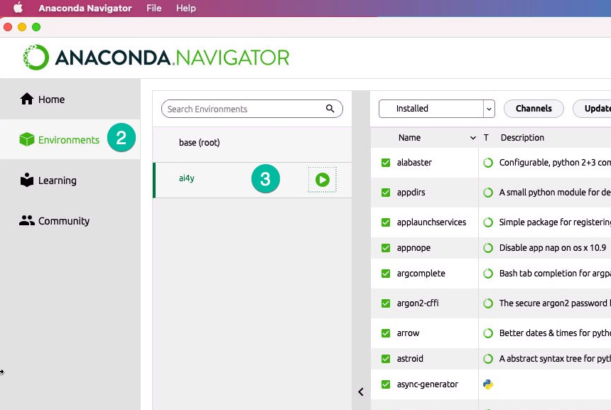
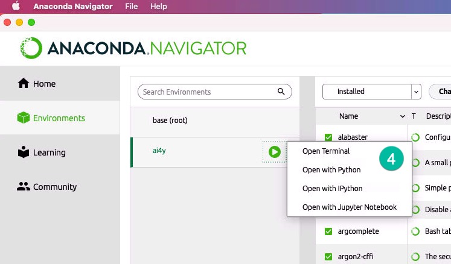

403教室使用說明
Table of Contents
1. Mac OS教學
1.1. 常用快速鍵
- 複製: Command ⌘ - C
- 貼上: Command ⌘ - V
- 剪下: Command ⌘ - X
- 放大: 貼上: Command ⌘ - +
- 縮小: 貼上: Command ⌘ - -
- 關閉程式: Command ⌘ - Q
- 關閉視窗: Command ⌘ - W
2. Python開發環境
2.1. Jupyter Notebook
2.2. Pycharm
3. OpenVINO開發環境
3.1. NCS2 Stick

Figure 1: NCS2安裝方式
3.2. Anaconda-Navigator
於Docker上開啟Anaconda-Navigator
- 點選Environments
選擇使用ai4y環境

- 點選Open with Jupyter Notebook

Figure 2: Caption
4. Python專案環境
4.1. 查詢現有環境
conda env list
4.2. 建立新環境
1: conda create --name ai4y python==3.7
4.3. 啟用conda環境
1: conda activate ai4y
4.4. 離開conda環境
1: conda deactivate
5. 於Python安裝套件
- 開啟終端機(Terminal / iTerm)
Figure 3: Caption
- 切換至ai4y執行環境
1: conda activate ai4y 2: conda install 套件名稱
例如：要安裝 sklearn
1: conda install -c intel scikit-learn
6. Python學習資源
7. 問題處理
7.1. MacOS系統 找不到NCS2解決方案
7.1.1. 重新插、拔NCS2 Stick
7.1.2. 安裝USB系統套件
打開Terminal，輸入以下指令
1: brew install libusb
7.2. 重新建立conda openvino環境
開啟終端機、貼上以下指令、WAIT
jupyter kernelspec uninstall openvino -y conda env remove -n openvino conda create -n openvino python=3.7 -y conda activate openvino pip3 install numpy==1.15 pip3 uninstall mkl-service -y pip3 install mkl-service pip3 install matplotlib conda install openvino-ie4py -c intel -y pip3 install opencv-python pip3 install openvino-dev conda install matplotlib -y conda install tensorflow -y conda install -c anaconda ipykernel -y python -m ipykernel install --user --name=openvino